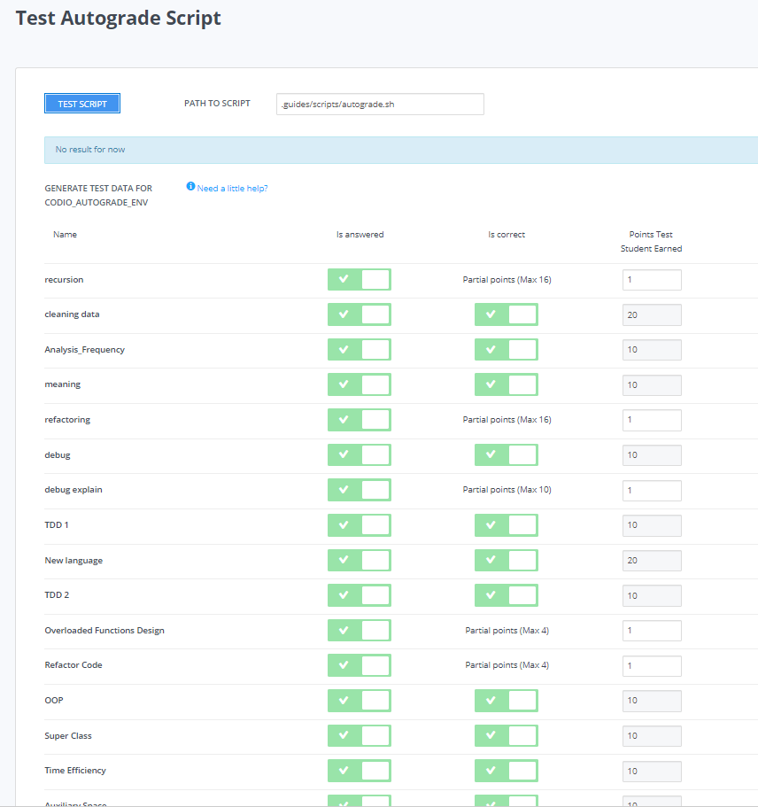

Assignment Level Scripts¶
You can use assignment level scripts to evaluate student code, normalize points, and mark for participation grading. Assignment level scripts are added in the Script Grading field on the Script Grading settings page. These scripts can then transfer the grading value into the grading field. Assignment level scripts are run when an assignment is Marked as Complete.
Note
The script must execute within 3 minutes or a timeout error occurs. There is a maximum size for the feedback that can be returned of 1Mb. If this limit is exceeded, the message Payload content length greater than maximum allowed: 1048576 will be returned.
If you are using an LMS platform with Codio, be sure to enter a percentage value in the Grade Weight field to maintain compatibility with LMS gradebooks. This value is then transferred into your LMS gradebook once you release the grades.
Secure scripts¶
If you store grading scripts in the .guides/secure folder, they run securely and students cannot see the script or the files in the folder. Only instructors can access this folder. You can find more information about assessment security here.
Access assessment results¶
You can access student scores for the auto-graded assessments in an assignment. All this information is in JSON format and can be accessed in the CODIO_AUTOGRADE_ENV environment variable. The following tabs show the format of this data. The first tab shows just the assessment portion of the data and the second depicts all the available values.
{
"assessments": {
"stats": {
"total": 2,
"answered": 2,
"correct": 2,
"totalPoints": 12,
"points": 8
},
"info": [{
"name": "Test 1",
"points": 5,
"answer": {
"correct": true,
"points": 5
}
}, {
"name": "Test 2",
"points": 7,
"answer": {
"correct": true,
"points": 3
}
}]
},
"completedDate": "2017-02-07T09:47:54.471Z",
"student": {
"id": "codio_GUID",
"username": "astudent",
"fullName": "A Student",
"email": "email@example.com"
},
"course": {
"id": "codio_course_id",
"projectId": "codio_project_id",
"lti": true,
"assignment": {
"id": "codio_assignment_id",
"start": null,
"end": null
}
}
}
{
"course": {
"id": "f5d936dd0f72af90aa238157f45429a4",
"name": "My Course Name",
"projectId": "50a40e7b-743c-4419-82f8-551b991cd108",
"lti": false,
"assignment": {
"id": "ee4e812c6571a0b0a62d29b98638cdeb",
"name": "An auto-graded assignment",
"start": null,
"due": null,
"end": null,
"penalties": {
"extendMinutes": 10080,
"penalties": {
"enabled": false,
"deductionIntervalMinutes": 60,
"deductionPercent": 0,
"lowestGradePercent": 0
}
}
},
"unit": {
"id": "ee4e812c6571a0b0a62d29b98638cdeb",
"name": "An auto-graded assignment",
"start": null,
"due": null,
"end": null,
"penalties": {
"extendMinutes": 10080,
"penalties": {
"enabled": false,
"deductionIntervalMinutes": 60,
"deductionPercent": 0,
"lowestGradePercent": 0
}
}
}
},
"class": {
"id": "f5d936dd0f72af90aa238157f45429a4",
"name": "My Course Name",
"projectId": "50a40e7b-743c-4419-82f8-551b991cd108",
"lti": false,
"assignment": {
"id": "ee4e812c6571a0b0a62d29b98638cdeb",
"name": "test codio grade json",
"start": null,
"due": null,
"end": null,
"penalties": {
"extendMinutes": 10080,
"penalties": {
"enabled": false,
"deductionIntervalMinutes": 60,
"deductionPercent": 0,
"lowestGradePercent": 0
}
}
},
"unit": {
"id": "ee4e812c6571a0b0a62d29b98638cdeb",
"name": "test codio grade json",
"start": null,
"due": null,
"end": null,
"penalties": {
"extendMinutes": 10080,
"penalties": {
"enabled": false,
"deductionIntervalMinutes": 60,
"deductionPercent": 0,
"lowestGradePercent": 0
}
}
}
},
"startedAt": "2025-01-13T13:51:38.520Z",
"completedDate": "2025-01-13T13:51:54.042Z",
"assessments": {
"stats": {
"total": 1,
"answered": 1,
"submitted": 0,
"correct": 1,
"totalPoints": 20,
"points": 20
},
"info": [
{
"id": "multiple-choice-927956147",
"name": "q1",
"type": "multiple-choice",
"instructions": "## Favorite food",
"points": 20,
"draft": {
"active": "61934e6f-deda-4453-b4f3-0b9dc716666f"
},
"answer": {
"correct": true,
"points": 20,
"correctAnswer": "Pizza",
"status": null
}
}
]
},
"grade": {
"penaltyDisabled": false,
"assessmentGrade": 100
},
"student": {
"id": "00112233-4455-6677-b298-aa0336dc36e5",
"username": "stest-sj-test2",
"fullName": "Student B Test",
"email": "student sj-test2@codio.com"
}
}
Participation Grading¶
You can implement participation grading using assignment level scripts. In the examples below the Codio environment variable is checked to see how many questions were answered in the assignment. The student grade is calculated based on whether they answered the question, not on correctness.
Depending on your language of choice select either the .sh or .py file and add it to your .guides/secure folder.
If you are using the Bash version you will first need to install the utility “jq” to your stack (see create a new stack).
#!/bin/bash
# save json based passed environment
echo $CODIO_AUTOGRADE_ENV > save.json
ANSWERED=$(jq -r '.assessments.stats.answered' save.json)
TOTAL=$(jq -r '.assessments.stats.total' save.json)
GRADE=$(($ANSWERED * 100 / $TOTAL))
FEEDBACK=""
if [ $TOTAL -eq $ANSWERED ]; then
FEEDBACK="✅ You answered all the questions and got full points on this assignment"
else
FEEDBACK="❌ You did not answer all the questions and therefore only received points for the questions you answered"
fi
curl --retry 3 -s "$CODIO_AUTOGRADE_V2_URL" -d grade=$GRADE -d format=md -d feedback="$FEEDBACK"
import os
import json
# import grade submit function
import sys
sys.path.append('/usr/share/codio/assessments')
from lib.grade import send_grade_v2, FORMAT_V2_MD, FORMAT_V2_HTML, FORMAT_V2_TXT
feedback=""
env = os.environ.get('CODIO_AUTOGRADE_ENV')
parsed = json.loads(env)
answered = parsed['assessments']['stats']['answered']
total=parsed['assessments']['stats']['total']
grade=answered*100/total
if total==answered:
feedback+="✅ You answered all the questions and got full points on this assignment"
else:
feedback+="❌ You did not answer all the questions and therefore only received points for the questions you answered"
res = send_grade_v2(grade, feedback, FORMAT_V2_MD)
exit( 0 if res else 1)
Add the file to Education>Test Autograde Script. If your file is not a bash script or other type of file that runs independently, you will need to specify the program that will run it, for example “python3 autograde.py”.
Note: The JSON is not updated until the assignment is marked as complete. If you are testing values from inside the assignment - you will not see the updated values.
Make sure to Publish the assignment.
In the course assignment settings Grade Weights section, enable Script Grading set Set custom script path to that file and disable Assessments Grading.
Regrade an individual student’s assignment¶
If students have clicked Mark as Complete and the custom script is triggered, you can regrade their work by resetting the complete switch, and then set it to complete again, which triggers the custom script to run again.
Regrade all student’s assignments¶
You can regrade all student’s assignments that have already been auto-graded from the Actions button on the assignment page.
Navigate to the assignment and open it.
Click the Actions button and then click Regrade Completed. This is useful if you have found a bug in your assignment level grading script. Regrade Completed does not run individual code test assessments.
Test and debug your grading scripts¶
Note
Codio provides the ability to test your auto-grading scripts when creating your project, this should be done before publishing your project to a course. Once an assignment has been published to the course, any changes made to files in the student workspace (/home/codio/workspace) are not reflected in the published assignment. Grading scripts should be stored in the .guides/secure folder. Files in the .guides and guides/secure folders can be published even if students have already started.
Test your script in the IDE¶
You can test your auto-grading script in the Codio IDE from the Education > Test Autograde Script on the menu bar. This option allows you to specify the location of your auto-grading script and run it against the current project content. It also allows you simulate scores attained by any auto-graded assessments located in the Codio Guide and select which autograded assessments to test.

Be sure to take the following into account when using this feature:
When you click Test Script:
All output to
stdoutandstderrare displayed in the dialog.The grade returned by your test script is at the bottom of the output section.
stdoutandstderroutput is not available when running the actual auto-grading script (not in test mode) because it runs invisibly when the assignment is marked as complete. Because of this, you should only generate output for testing and debugging.If you want your script to provide feedback to the student, you should output it to a file that can be accessed by the student when opening the project at a later date. In this case, you should allow read-only access to the project from the assignment settings after being marked as complete.
Test your script using bootstrap launcher¶
You can also use a simple bootstrap launcher that loads and executes the script from a remote location so that you can edit and debug independently of the Codio box. The following example bash script shows a Python script that is located as a Gist on GitHub. This script might be called .guides/secure/launcher.sh.
#!/bin/bash
URL="https://gist.githubusercontent.com/ksimuk/11cd4e43b0c43f79d9478efbe21ba1b9/raw/validate.py"
curl -fsSL $URL | python - $@
It is important that this file is stored in the .guides/secure folder. You then specify the full filepath .guides/secure/launcher.sh in the Set custom script path field in the assignment settings.
It is now possible to debug the Python script and fix any bugs that you may have noticed once students have started work on the assignment.
Sending Points to Codio¶
Codio provides a Python library to facilitate reporting points from your custom scripts. There are four functions in this library: send_grade, send_grade_v2, send_partial and send_partial_v2.
Note
Partial points are not used in assignment level scripts, see Allow Partial Points for more information about setting up partial points.
In order to use this library you need to add the following code to the top of your grading script:
# import grade submit function
sys.path.append('/usr/share/codio/assessments')
from lib.grade import send_grade
or:
# import grade submit function
sys.path.append('/usr/share/codio/assessments')
from lib.grade import send_grade_v2, FORMAT_V2_MD, FORMAT_V2_HTML, FORMAT_V2_TXT
The calls to use these functions are as follows:
send_grade(grade)
grade - Should be the percent correct for the assessment.
send_grade_v2(grade, feedback, format=FORMAT_V2_TXT, extra_credit=None)
grade - Should be the percent correct for the assessment.
feedback - The buffer containing the feedback for your student - maximum size is 1 Mb.
format - The format can be Markdown, HTML or text and the default is text.
extra_credit - Extra points beyond the value for doing this correctly. These do not get passed to an LMS system automatically, just the percentage correct.
Auto-grading enhancements¶
The V2 versions of the grading functions allow you to:
Send feedback in different formats such as HTML and Markdown/plaintext.
Provide separate debug logs.
Notify (instructors and students) and reopen assignments for a student on grade script failure.
If you don’t use the send_grade_v2 functions, this URL (passed as an environment variable) can be used:`CODIO_AUTOGRADE_V2_URL`
These variables allow POST and GET requests with the following parameters:
Grade (
`CODIO_AUTOGRADE_V2_URL`) - return 0-100 percent. This is the percent correct out of total possible points.Feedback - text
Format - html, md, txt - txt is default
Penalty - Penalty is number between 0-100,
If you want to calculate penalties in the grading script you can use the completedDate (in UTC format) in CODIO_AUTOGRADE_ENV to calculate penalties. See Python example below.
Note
Grade would be set after any penalties applied. Grade + Penalty should be <= 100. The Penalty is available only for assignment grading. Set penalty to -1 to remove any penalty override.
With the V2 versions of grading, the script output is saved as a debug log. This means that all information you want to pass to students must use the Feedback mechanism.
If the script fails:
The attempt is recorded.
The assignment is not locked (if due date is not passed).
An email notification with information about the problem is sent to the course instructor(s) containing the debug output from the script.
These Python and Bash files that can be loaded by a bootstrap script or as explained above in the participation grading section.
#!/bin/bash
POINTS=$(( ( RANDOM % 100 ) + 1 ))
EXTRA_CREDIT=$(( ( RANDOM % 100 ) + 1 ))
PENALTY=$(( ( RANDOM % 100 ) + 1 ))
curl --retry 3 -s "$CODIO_AUTOGRADE_V2_URL" -d grade=$POINTS -d format=md -d feedback='### Markdown text here' -d extra_credit=$EXTRA_CREDIT -d penalty=$PENALTY
#!/usr/bin/env python
import os
import random
import json
# import grade submit function
import sys
sys.path.append('/usr/share/codio/assessments')
from lib.grade import send_grade_v2, FORMAT_V2_MD, FORMAT_V2_HTML, FORMAT_V2_TXT
CODIO_UNIT_DATA = os.environ["CODIO_AUTOGRADE_ENV"]
def main():
# Execute the test on the student's code
grade = random.randint(0, 100)
feedback = '## markdown text'
completedDate = json.loads(CODIO_UNIT_DATA)['completedDate']
if completedDate > "2023-05-20T00:00:00.00Z":
penalty = 20
elif completedDate > "2023-05-10T00:00:00.00Z":
penalty = 10
else:
penalty = -1
extra_credit = random.randint(0, 100)
# Send the grade back to Codio with the penalty factor applied
res = send_grade_v2(grade, feedback, FORMAT_V2_MD, extra_credit, penalty)
# res = send_grade_v2(grade, feedback, penalty=penalty) # if 'format' or/and 'extra credit' params are not in request then use penalty=penalty_value
print(CODIO_UNIT_DATA)
exit( 0 if res else 1)
main()
Example grading scripts¶
This section provides example assignment level scripts using the older methods to send grades.
Note
Both of these examples use random numbers to generate the grade - you can substitute whatever test you would like.
#!/bin/bash
set -e
# Your actual test logic
# Our demo function is just generating some random score
POINTS=$(( ( RANDOM % 100 ) + 1 ))
# Show json based passed environment
echo $CODIO_AUTOGRADE_ENV
# Show json based project information
echo $(codio-vm get-project-info --format json)
# Send the grade back to Codio
curl --retry 3 -s "$CODIO_AUTOGRADE_URL&grade=$POINTS"
import os
import random
import json
import datetime
# import grade submit function
import sys
sys.path.append('/usr/share/codio/assessments')
from lib.grade import send_grade
##################
# Helper functions #
##################
# Get the url to send the results to
CODIO_AUTOGRADE_URL = os.environ["CODIO_AUTOGRADE_URL"]
CODIO_UNIT_DATA = os.environ["CODIO_AUTOGRADE_ENV"]
def main():
# Execute the test on the student's code
grade = validate_code()
# Send the grade back to Codio with the penalty factor applied
res = send_grade(int(round(grade)))
exit( 0 if res else 1)
########################################
# You only need to modify the code below #
########################################
# Your actual test logic
# Our demo function is just generating some random score
def validate_code():
return random.randint(10, 100)
main()